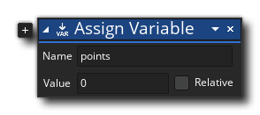
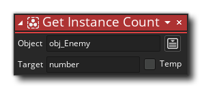
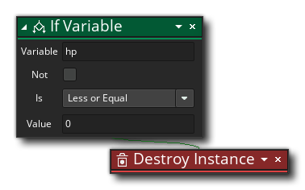
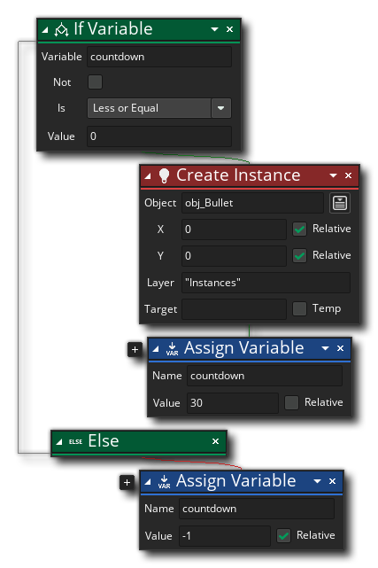
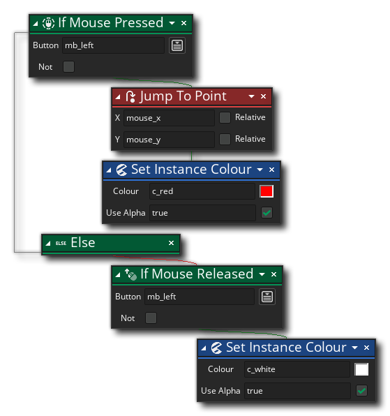

在上一节中，我们概述了GameMaker是如何工作的，以创建你的游戏，但无论你添加了什么sprites 、objects 或rooms ，除非你编程 ，否则一切都不会发生。但是，什么是程序？
在一般意义上，一个程序只是一组指令（或 声明s），你把它交给计算机，告诉它执行某些任务。这些任务可以有很大的不同，从简单地告诉计算机在屏幕上画一些东西，到根据一些用户的输入计算一个值，然后对它作出反应，但在所有情况下，它都是一个逻辑结构，会产生一些结果。在上一页中，我们谈到了将一个object 的实例向右移动2个像素，所以让我们看一下实际的程序，它可以做到这点。
在GML Visual中，它看起来像这样。
而使用GML代码，它将看起来像这样。
x = x + 2;
为了理解上面的内容，我们必须首先谈论变量，然后我们将继续讨论函数 ，最后是条件 ，因为这三样东西通常是构成任何程序的主体。
变量是编程的基石，另外还有函数 （我们稍后会简单介绍）。变量是一个简单的命名值，在上面的例子中，变量被称为 "x"。现在，"x"可以是任何数值，比如-126，或者583，甚至1.56378，但是 "x"的实际数值并不重要，因为它可以变化（因此被称为 "变量"）。重要的是，我们把 "x" 加到2上。值得注意的是，在这种情况下，"x" 是一个内置变量，这意味着它是由GameMaker为所有objects ，但你也可以创建自己的变量。
要创建一个变量，必须在它被使用之前声明 它。声明一个变量就是告诉GameMaker这个新变量的存在，并且它有一个初始值。要声明一个变量，你只需要做这样的事情。

或。
points = 0;
一旦一个变量被声明，那么它就可以在进一步的程序代码或行动中使用。变量的伟大之处在于它允许你在多个地方 "重复使用 "一个值，而实际上不必担心这个值是什么。例如，假设你有一个 "damage" 变量，你在不同的地方使用它来告诉GameMaker对游戏中的其他objects 造成一定的伤害。我们可能声明 "damage" 为20，但后来决定这个值太大了，想把它改成10。如果我们使用20这个值而不是一个变量，我们就需要翻阅所有的代码或动作，将20改为10，这既费时又容易出错。然而，使用一个变量意味着我们只需在声明时将其改为10一次 ，其余的代码或动作将使用这个新值。
值得注意的是，有许多不同类型的变量，每个变量的使用方式都略有不同。我们不会在这里讨论这个问题，但你可以从手册的GameMaker语言概述部分找到更多信息。
然而，变量仅仅是故事的第一部分。下一个部分是函数的使用...
编程的下一个主要重要部分是与变量一起使用函数 。一个函数只是向计算机发出的做某事的指令，它可以有输入值，也可以有输出值（即：你可以给它一个值，它将做一些操作，然后返回一个不同的值），尽管不是所有的函数都需要输入，也不是有输出的。为了更好地理解这一点，让我们看一下GameMaker中的一个内置函数。
我们要看的函数是 instance_number()，在GML Visual中是获取实例数的动作。这个函数/动作将检索一个给定的object 在游戏中的实例数量room ，你将这样使用它。

或。
number = instance_number(obj_Enemy);
在上述两个例子中，该函数将一个object ID作为其输入值（即 参数object 或参数），并将给出一个输出值（返回值 ），即当函数/动作被调用时，room 中存在的实例的数量。注意，我们使用一个变量来存储返回值，即变量"number"。这个变量可以在这段代码运行前声明，或者在代码运行时被认为已经声明，并将函数/动作的返回值分配给它。
值得注意的是，你不仅仅局限于使用内置的GameMaker Language 或GML Visual动作，你实际上可以构建自己的函数，用来扩展编程时的可能（你可以在这里找到更多关于GML ，在这里找到GML Visual）。
你可以用函数和变量做很多事情，但是如果没有编程故事的最后一个重要部分--条件反射，它们就几乎毫无用处。
编程的很大一部分是由提出问题组成的。这些问题通常是简单的问题，可以评估为真或假，被称为条件 （而 true 和 false 的值被称为布尔值 ）。最常见和最广泛使用的条件式是问题 "if"，它用于检查某些东西是 true 还是 false ，然后采取相应的行动。一个简单的例子是，如果一个角色的健康状况低于零，就将其从游戏中移除，用通俗的语言表达就是。
if the character variable "hp" is less than or equal to zero, then destroy it.
为了将上述内容变成代码，我们会有这样的内容。

或。
if (hp <= 0)
{
instance_destroy();
}
所以，上面我们问了一个问题 "如果hp变量小于或等于0"，然后如果评估结果为真，我们就调用函数 instance_destroy()或动作DestroyObject Instance。请注意，"then"（如果某事......则某事......）是隐含的 ，你不需要添加它，还请注意，在GML 代码中，我们使用大括号 {} 来 "阻止 "我们希望在 " if"评估为 true 时执行的代码（在GML Visual 中，这被象征为将动作放在 "If" 动作右边 ）。在大括号之间添加的任何内容只有在 " if" 评估为 true 时才会运行，因此你可以在一个 "块 "中运行多个语句。
在使用 "if" 条件时，还有一点需要注意的是，我们也可以给它添加一个 "else" 语句，这样条件就变成了 "如果有东西被评估为 true ，那么就做什么，否则 就做什么"。这样就可以处理一个返回 true 或 false 的条件表达式。让我们也举个例子。

或。
if (countdown <= 0)
{
instance_create_layer(x, y, "Instances", obj_Bullet);
countdown = 30;
}
else
{
countdown = countdown - 1;
}
上述代码翻译成普通语言为：。
if the countdown variable is less than or equal to zero then:
create an instance of the object "obj_Bullet" at the current x/y position on the layer "instances",
reset the countdown variable to 30.
else:
subtract one from the countdown variable.
不要太担心上述代码中实际的实例创建部分，因为我们将在下面的章节中详细介绍。这里需要理解的重要事情是，你可以创建条件表达式，检查某些东西是 true 还是 false ，并让你的程序以不同的方式作出反应。这似乎是一件非常简单的事情，但它实际上是非常强大的，并且将构成你在GameMaker中编程时几乎所有工作的基础。
因此，为了回答我们的问题 "什么是编程？"，我们可以说，编程 是使用语句 的组合-- 可以使用 变量s 来形成 表达式s、函数 来执行任务，以及 有条件的s来提出问题--然后并发地运行这些语句来实现一个目标。下面你可以看到一个稍微复杂的程序，在GML Visual和GML 。你能猜到它是做什么的吗？

或。
if mouse_check_button_pressed(mb_left) == true
{
x = mouse_x
y = mouse_y
image_blend = c_red;
}
else
{
if (mouse_check_button_released(mb_left) == true)
{
image_blend = c_white;
}
}
希望你现在对编程有了更多的了解，所以让我们继续探索GameMaker IDE，看看如何添加assets ，如精灵 和物体 以及其他你的游戏所需要的重要资源。